Issue No. 3 · Week of November 14 – 20, 2026 · From your MyMind saves
One Piece of MyMind
One week of your saves, arranged into five picture themes and six reading stories. Nothing repeats, and nothing is here by accident.
Pictures · one · 6 pictures
Words on paper
Four pages of Brecht poems photographed from one post: a warning about judging art by the man who made it, instructions on working with particular gestures, a war poem out of Altona, and a satire of an abstemious chancellor. Beside them, a line from Martha Gellhorn's letters about no longer having it in her to struggle, and a two-panel quote from Rohmer's A Summer's Tale, spoken on a harbor bench. These are the week's saves that are mostly printed words.
The week's strangest visuals. A sofa shaped like a snake in front of a floral still life, parked in a dark paneled room. A 3D figure under a sky of orbiting eyes. A child's crayon drawing of Carnage towering over Spider-Man. A Spanish shirt maker folding shirts into faces for its campaign. A layered collage of a Bulls dunk over Knicks defenders. And the cardboard model behind an animated short, shown mid-build.
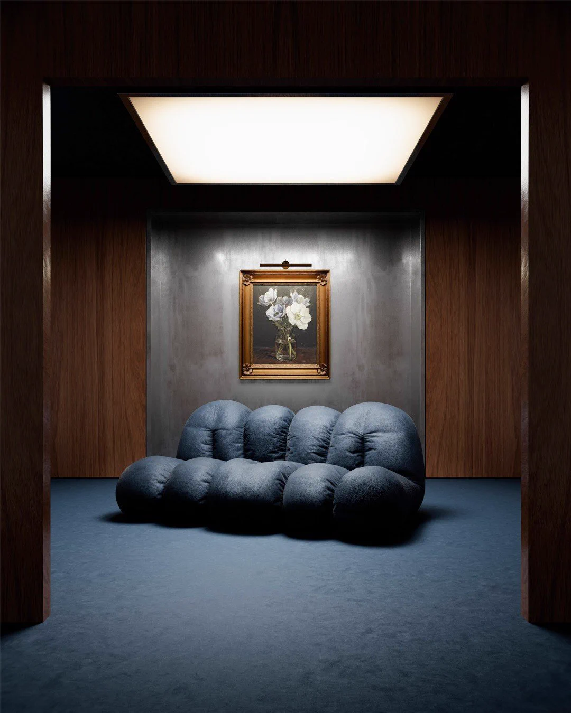
Snake Sofa Concept by Angus EasthopeA series of moody, rendered interior images presents the Snake Sofa, a concept design by Angus Easthope. The sofa is made of plump, rounded, segmented blue-gray cushions that curve like a snake's body. It sits in a dark…x.com
Surreal 3D Animation of Humanoid and Orbiting EyesThis video features a surreal 3D animation where a humanoid figure stands in the center while multiple looping ribbons of images showing human eyes orbit around it. The background displays a sky with clouds against a…x.com
Kid's Crayon Drawing of Carnage Towering Over Spider-ManA parent shares their child's impressive crayon artwork showing a huge, menacing red-and-black symbiote villain, which looks like Carnage, looming over a small Spider-Man set against a burst of yellow. A second photo…x.com
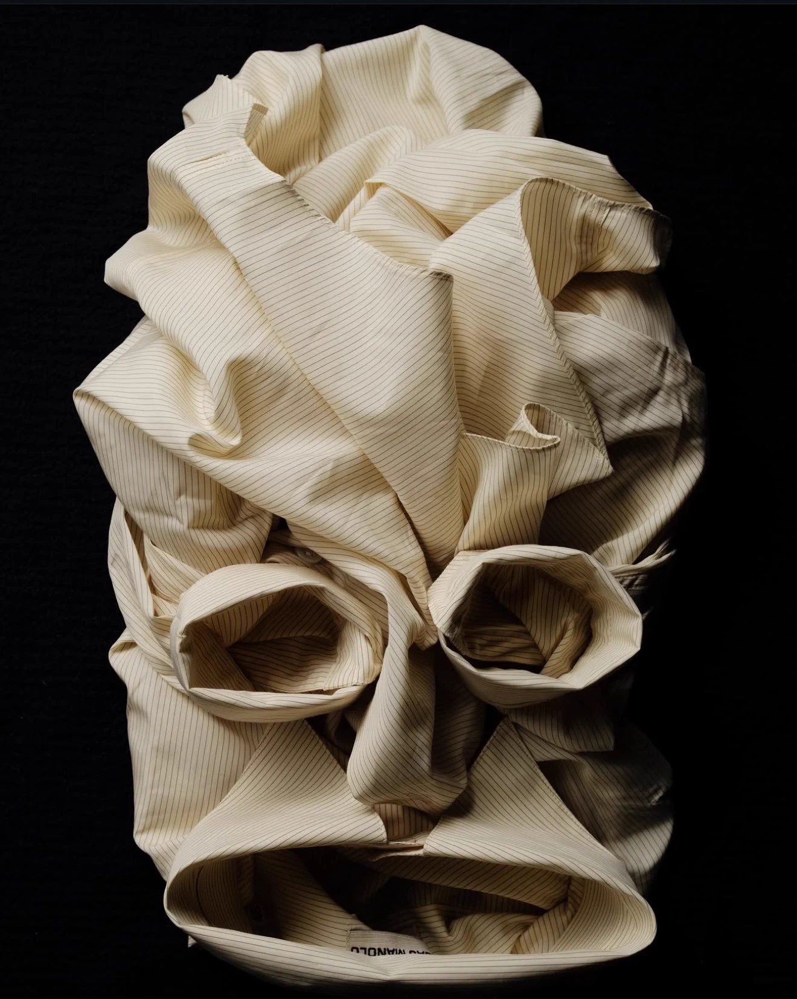
Camisas Manolo's Face-Shaped Shirt CampaignThe post praises Camisas Manolo, a young Spanish shirt brand, for a creative campaign in which its new shirts are folded and arranged into expressive faces. The photos show striped, plain, checked and solid-colored…x.com
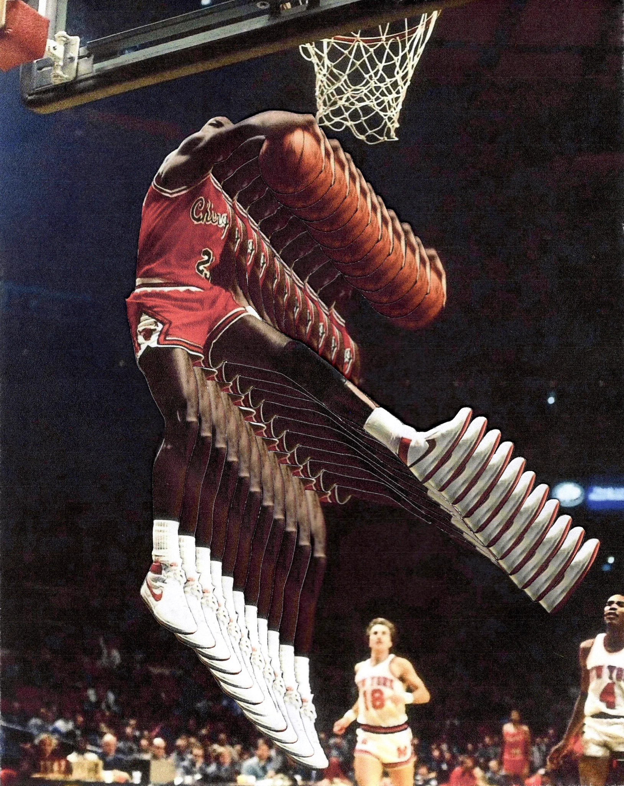
Your Airness: Layered Collage of a Chicago Bulls DunkThe post shows a paper collage artwork titled "Your Airness" that reworks a vintage photograph of a Chicago Bulls player in a red #2 jersey and Nike sneakers leaping toward the hoop against New York opponents. The…x.com
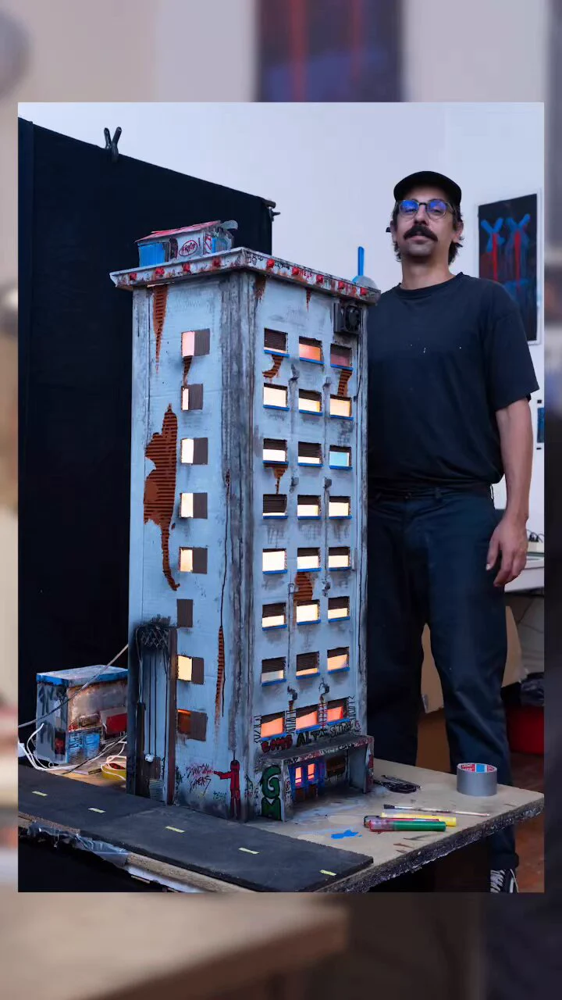
Crowded Solitude Making ProcessThe post shows the creative process of building a miniature architectural model out of cardboard for a project titled Crowded Solitude. The artist cuts, assembles, paints, and details the building, then photographs it…x.com
Pictures · three · 3 pictures
Great advice for shitty people
The same satirical advice series, saved three separate times in one week. Handwritten cards proposing terrible etiquette for gatherings, conversation, and the writing of thank-you notes. The series keeps resurfacing because each joke lands on a real manner someone actually has.
Great Advice for Shitty PeopleA series of five white cards, each headed "Great Advice for Shitty People" and carrying a handwritten tip that is deliberately rude or obnoxious. The tips are to tell a plus-one friend that you had to convince the host…instagram.com
Great Advice for Shitty PeopleA series of ten white cards titled "Great Advice for Shitty People," each with a handwritten tip that satirically encourages rude, awkward, or absurd social behavior. Examples include bringing guests their coats before…instagram.com
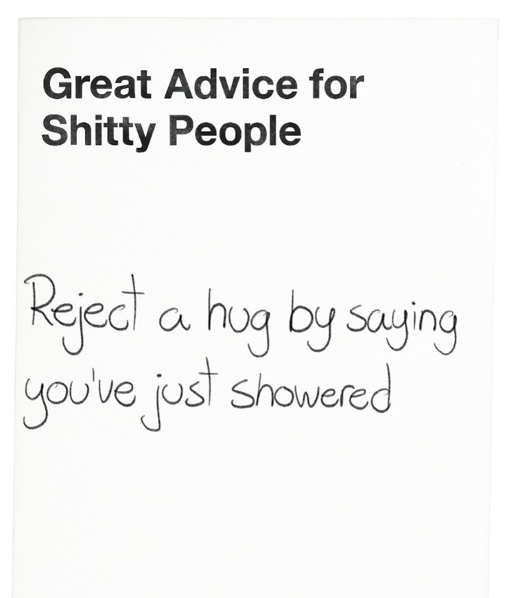
Great Advice for Shitty PeopleA series of eight white cards headed 'Great Advice for Shitty People', each with a handwritten tip that is deliberately rude or socially awkward. The tips include rejecting a hug by saying you've just showered,…instagram.com
Pictures · four · 4 pictures
What they wore
Clothes from four directions. Albert's fall/winter 2026 menswear, all belted shawl-collar coats and cable knits. E.N.D. Design Lab's lookbook for its workman's jacket and rugby shirt. Peggy's Gilded Age wedding gown, lace with a tiered ruffled skirt, worn for the TV wedding that jumped the broom on HBO. And a sixteen-second tutorial on the perfect windsor knot, saved from X. Read alongside: the piece on why viewers are still not over Peggy's wedding.
Albert Fall/Winter 2026 Menswear CollectionThe poster praises Albert's Fall/Winter 2026 collection, shown in a lookbook of nine images. A male model wears a range of tailored menswear in industrial interiors and on elegant city streets. Looks include a shaggy…x.com
E.N.D. Design Lab Apparel Collection LookbookA lookbook promoting the clothing line E.N.D. Design Lab, linked to the website Everyniggadeserves.com. The set of images shows models against a lavender backdrop wearing a black E.N.D. puffer jacket with a large…x.com
How-to images saved without a word of commentary. A drawing lesson on training your hand to know the body's proportions. A small orange diagram on shifting focus between past, present, and future. And a comic about overwatering a daisy, which is the same lesson from the other direction: too much care kills.
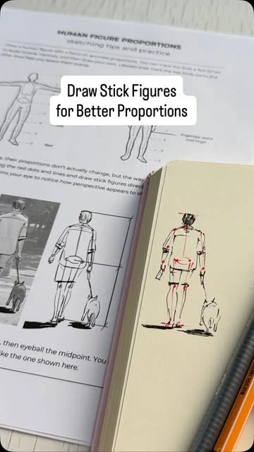
Train Your Hand to Know the Body: Human Figure ProportionsThis tutorial illustrates how to train muscle memory and visual perception for human figure proportions. Starting with reference marks for height and dots for joints and landmarks, the artist outlines a simple stick…instagram.com
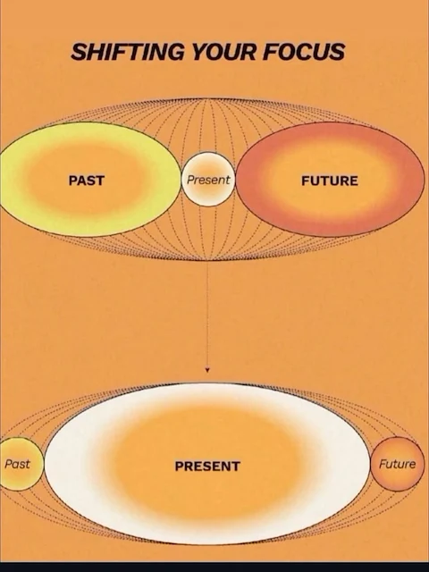
Shifting Focus Between Past, Present, FutureOrange-toned diagram contrasting focus on past and future versus a dominant present, using ellipses and dashed orbit lines.instagram.com
Overwatering a Daisy Comic StripFour-panel comic where a pink figure overwaters a smiling daisy, which coughs and cries in distress.x.com
The reading · six stories
The reading
The written side of the week: the articles and videos, grouped by what they share.
Reading · top story · 6 items
The local AI stack grows up
The biggest week in months for the tools you run yourself. llama.cpp and ggml both shipped version 1.0.0, almost three and a half years in, a stability promise for the local model ecosystem. Qwen 4 arrived the same week. Around them the practice matured: a pattern for running coding agents against external sandboxes, so the boundary is enforced by the machine rather than the model's judgment. A report of one software factory that built thirty C# libraries, about 1.9 million lines, in six weeks. A review of Fable 5.2, the most expensive model per token, and what agent teams do beyond the model. And a warning that token fraud, from resold free trials to laundered promo codes, is already costing AI providers real money.
llama.cpp v1.0.0 : A stronger foundation for the local AI ecosystemThe release of llama.cpp v1.0.0 and ggml v1.0.0 marks a significant milestone for the local artificial intelligence ecosystem, offering a robust, lightweight, and portable C and C++ implementation for running…huggingface.co
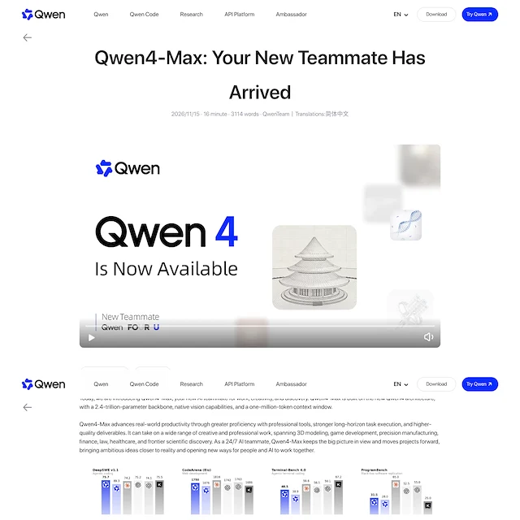
Qwen 4 is Now AvailableThis article discusses the features and updates regarding the Qwen language model, providing an overview of its capabilities and developments within the artificial intelligence field.qwen.ai
External sandboxes for coding agentsPrime Radiant has introduced the concept of external sandboxes to safely run coding agents like Claude Code, Codex, and Pi without risking damage to the host system. By isolating execution within a Linux environment…blog.primeradiant.com
Fable 5.2 is CRACKED but THIS goes BEYOND THE MODELRaw model capability is no longer the edge, and the system built around the model is. The video opens with Fable 5.2, which is most compelling as an orchestrator and in its medium and low modes, where it still scores…youtube.com
Token fraud is here and it’s BAD. Here’s what you need to know.Claire Vo, solo founder of ChatPRD, explains how token fraud has cost her tens of thousands of dollars in LLM inference over the past year. She outlines six abuse patterns: free trial farming, promo code abuse, bad…youtube.com
Reading · theme one · 5 items
Records at the auction house
Two records in one week at Sotheby's. Yayoi Kusama's Infinity Net painting brought 15.1 million dollars. A 1945 Aaron Douglas painting of Harriet Tubman with broken shackles sold for a record 14.5 million, consigned by Bennett College, and Sotheby's shared the canvas itself. Christie's follows with rare Louis Vuitton artist collaboration bags by Murakami, Kusama, and Gehry. Under all of it, the Guardian retraces Peggy Guggenheim's scheme of buying a painting a day, the spending habit that built a collection the auction market still echoes.
Aaron Douglas Painting Shared by Sotheby'sThe post from Sotheby's presents a painting signed by Aaron Douglas, rendered in layered green and blue tones with overlapping geometric light beams. At the center a silhouetted figure raises arms with broken shackles,…x.com
Christie’s to Auction Rare Louis Vuitton Artist Collaboration BagsChristie's New York is set to present an exclusive private collection titled Scarcity & Infinity, featuring the most comprehensive assortment of Louis Vuitton artist collaboration bags ever offered at auction. Set to…hypebeast.com
We're Still Here gathers quilts by fifteen contemporary Black artists, curated by Carolyn Mazloomi, quilts that carry social issues in fabric. James Barnor's studio portraits, split between Accra and London, get a show that reframes the history of modern photography. Kwame Dawes talks about chronicling the sentiment of his time, poetry as the record itself. Beyoncé reaches her 100th Grammy nomination, more than any artist. And Maryland gets sued for six billion dollars over the underfunding of its historically Black university, the bill for the other side of the ledger.
James Barnor: Reframing the History of Modern PhotographyRenowned photographer James Barnor has been announced as the recipient of the prestigious 2027 Outstanding Contribution to Photography Award at the Sony World Photography Awards. Spanning decades across Ghana and…aestheticamagazine.com
Beyoncé just made Grammy history again with her 100th nominationBeyoncé has achieved a historic milestone by becoming the first recording artist to secure 100 Grammy nominations. Her latest recognition comes in the Best R&B Solo Performance category for the track "Morning Dew…thegrio.com
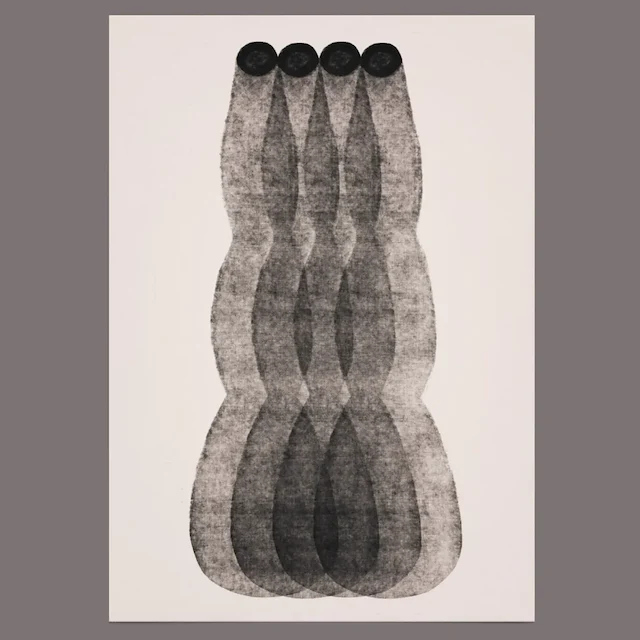
Kwame Dawes: Chronicling the Sentiment of His TimeIn this extensive interview conducted by Rasaq Malik Gbolahan, poet laureate of Jamaica Kwame Dawes reflects on his profound literary journey, artistic lineage, and enduring dedication to archiving African literature.…guernicamag.com
Reading · theme three · 5 items
Your data, their rules
A week of quiet policy changes and loud failures. Google will keep Gemini chats for two months instead of 72 hours, even with history turned off. A massive website malware attack targeted iPhones and iPads. Hackers leaked customer data claimed to come from Visa, Mastercard, and JPMorgan. The FCC approved a rule letting prisons jam cellphone signals. And one roundup chart counts the major IT outages of six straight days: airlines, banks, and agencies, all in a single stretch.
iPhone, iPad targeted by massive website malware attackVisitors to over one hundred seventy major websites experienced security risks following a significant cyberattack involving compromised scripts on Optimizely. Malicious actors injected unauthorized JavaScript to…appleinsider.com
Hackers Leak Visa, Mastercard and JPMorgan Customer DataMajor financial institutions including Visa, Mastercard, and JPMorgan Chase confirmed that customer information was exposed following a security breach at third-party service providers. A ransomware organization known…decrypt.co
FCC greenlights rule allowing prisons to jam cellphone signalsThe Federal Communications Commission has voted unanimously to allow state and local correctional facilities to utilize signal-jamming technology to combat the influx of illegal contraband devices. Supporters argue that…theverge.com
Roundup of Major IT Outages Over Six DaysThe post lists a series of significant IT outages and service disruptions reported across a six-day span in November. It begins with Microsoft on November 12th and an FAA ground stoppage on November 13th, then notes…x.com
Reading · theme four · 5 items
Around DC
The local list. Winternational brings the embassies to one hall at the Ronald Reagan Building on December 8. East City Art's roundup covers gallery openings and exhibitions through November 29. A Native American heritage lineup brings indigenous films and an art market to the city and online. Ten bars with live music, jazz included. And Step Back, Doors Closing, a drama set on the DC subway about commuting and social distance, joins the watchlist.
Travel the world without leaving DC at Winternational!Residents and visitors can experience diverse global cultures without departing from Washington, DC during the upcoming 13th Annual Winternational Embassy Showcase. Scheduled for Tuesday, December 8, this free public…popville.com
DC Art Gallery Openings and Exhibitions: November 16-29 - East City ArtThe art scene in the Washington, DC metro region offers a vibrant array of exhibitions, artist talks, and creative workshops spanning from November 16 through November 29, 2026. Key cultural highlights feature Diana…eastcityart.com
Indigenous films, art and family events in Washington, DC and OnlineThis November, visitors are invited to honor the living cultures and enduring legacies of indigenous communities through an engaging series of films, art exhibitions, vibrant performances, and family activities hosted…popville.com
Ten Bars with Live Music in Washington DCA carousel guide to ten Washington DC bars and lounges that regularly host live music. Each slide names a venue, its neighborhood and its schedule: Shanklin Hall (Adams Morgan) has live music and DJ sets Thursday…instagram.com
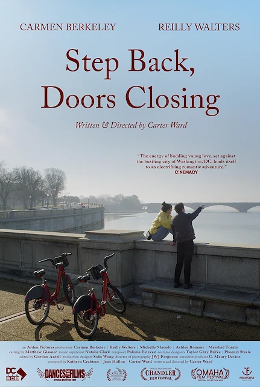
Step Back, Doors ClosingSet against the backdrop of an urban transit network, Step Back, Doors Closing observes the daily routines and quiet interactions of city travelers navigating subterranean platforms and train carriages. The narrative…imdb.com
Reading · theme five · 4 items
Franchises fight back
Star Wars turns 50 and the merchandise machine runs at full power: LEGO anniversary sets on one side, Kith and Hasbro teasing a Sith collection of figures and apparel on the other. Open Culture looks back at the gloriously cheap 1970s Italian knockoffs that Star Wars inspired, unofficial space operas on real film stocks. And the Wachowskis move to reclaim The Matrix itself, exercising copyright termination against the studio. Ownership of a franchise, it turns out, is always being renegotiated.
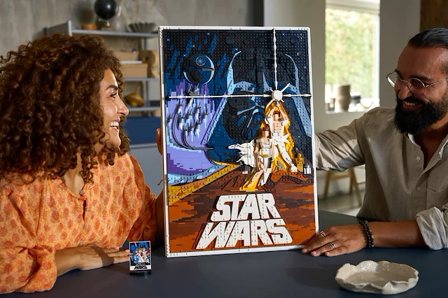
LEGO Star Wars 50th Anniversary setsAhead of the fiftieth anniversary of Star Wars, the LEGO Group has announced an exciting new wave of seven building sets scheduled for release on January 1st, 2027. This special collection spans intricate artwork,…lego.com
Behold the Gloriously Cheap 1970s Italian Knockoffs Inspired by Star WarsWhen George Lucas released Star Wars in 1977, it sparked an unprecedented popular culture phenomenon that completely transformed cinema. Recognizing the massive public enthusiasm for this space-set adventure, the…openculture.com
The Wachowskis Are Reclaiming ‘The Matrix’As Warner Bros. moves forward with a fifth installment of the iconic sci-fi franchise, filmmakers Lana Wachowski and Lilly Wachowski have formally notified the studio of their intent to exercise copyright termination…puck.news